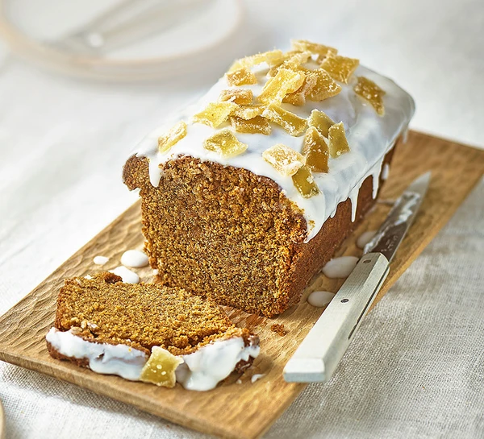

Ginger Loaf Cake

Description
Get set for autumn with this iced and spiced ginger loaf cake. It's a real treat, whether you’re vegan or not.
Preparation time: 15 mins
Cooking time: 45 mins
Serves: 8
Ingredients
- 100ml vegetable oil, plus extra for the tin
- 275g self-raising flour
- 150g dark muscovado sugar
- 1 tsp baking powder
- 1 tbsp ground ginger
- 50g treacle
- 50g stem ginger from a jar, finely grated, plus 1 tsp of the ginger syrup
- 150g icing sugar
- ½ lemon, juiced
- 4 crystallised stem ginger pieces, sliced
Steps
- Heat the oven to 200C/180C fan/gas 6. Oil a 900g loaf tin (ours was 19 x 9 x 6cm) and line with a long strip of baking parchment. Mix the flour, muscovado sugar, baking powder and ground ginger together in a large bowl. Tip in the oil, treacle, grated stem ginger and 170ml cold water, then beat together until smooth using a wooden spoon.
- Pour the cake mixture into the prepared tin and bake in the centre of the oven for 45-50 mins until a skewer inserted into the middle comes out clean. Leave to cool in the tin for 5 mins, then transfer to a wire rack to cool fully.
- Sieve the icing sugar into a bowl, add the ginger syrup and mix in just enough lemon juice to make a thick, pourable icing that can coat the back of a spoon. Put the cake on a plate or stand, remove the parchment and drizzle over the icing. Immediately scatter over the stem ginger. Cut the cake into thick slices to serve.